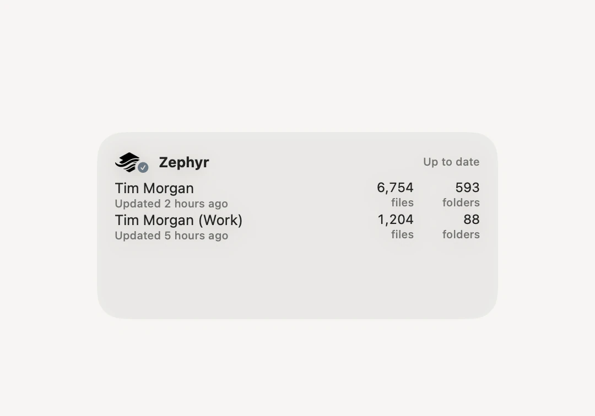
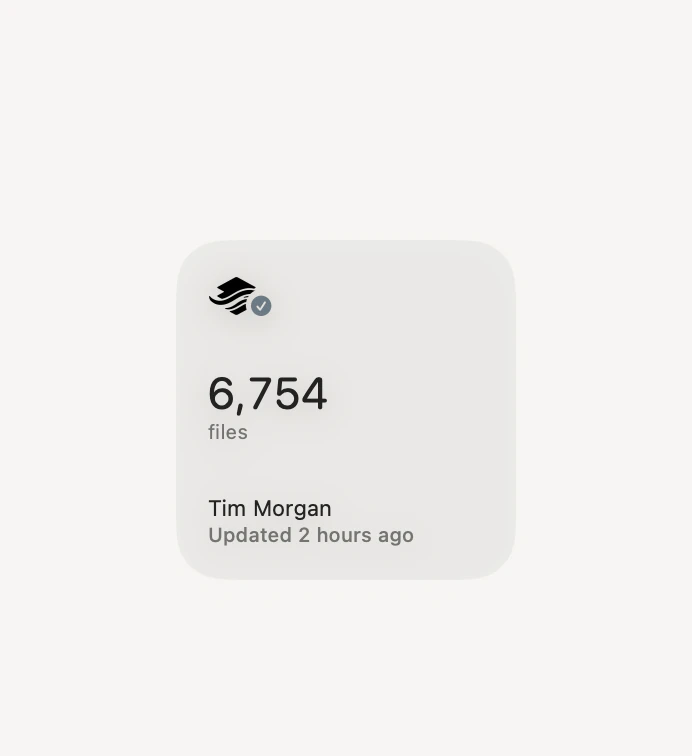
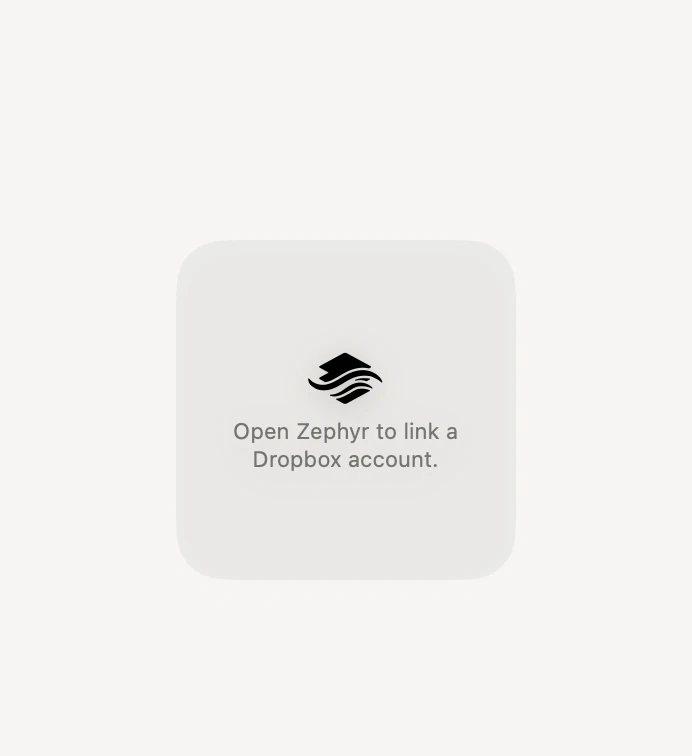

Zephyr’s Sync Status widget shows each linked account’s file counts and anything that couldn’t sync, so you can see the state of things without clicking the menu bar.

Control-click the desktop, then choose Edit Widgets.
Find Zephyr in the list on the left.
Choose a size, then drag the widget where you want it.
The small size shows one account. The medium size shows several.

The widget reads a summary Zephyr publishes as it syncs, so it has nothing to show until Zephyr has run at least once with an account linked. Open Zephyr, and the widget fills in.

Note: The widget follows Zephyr rather than Dropbox directly. While Zephyr isn’t running, the counts stand still at whatever it last published.